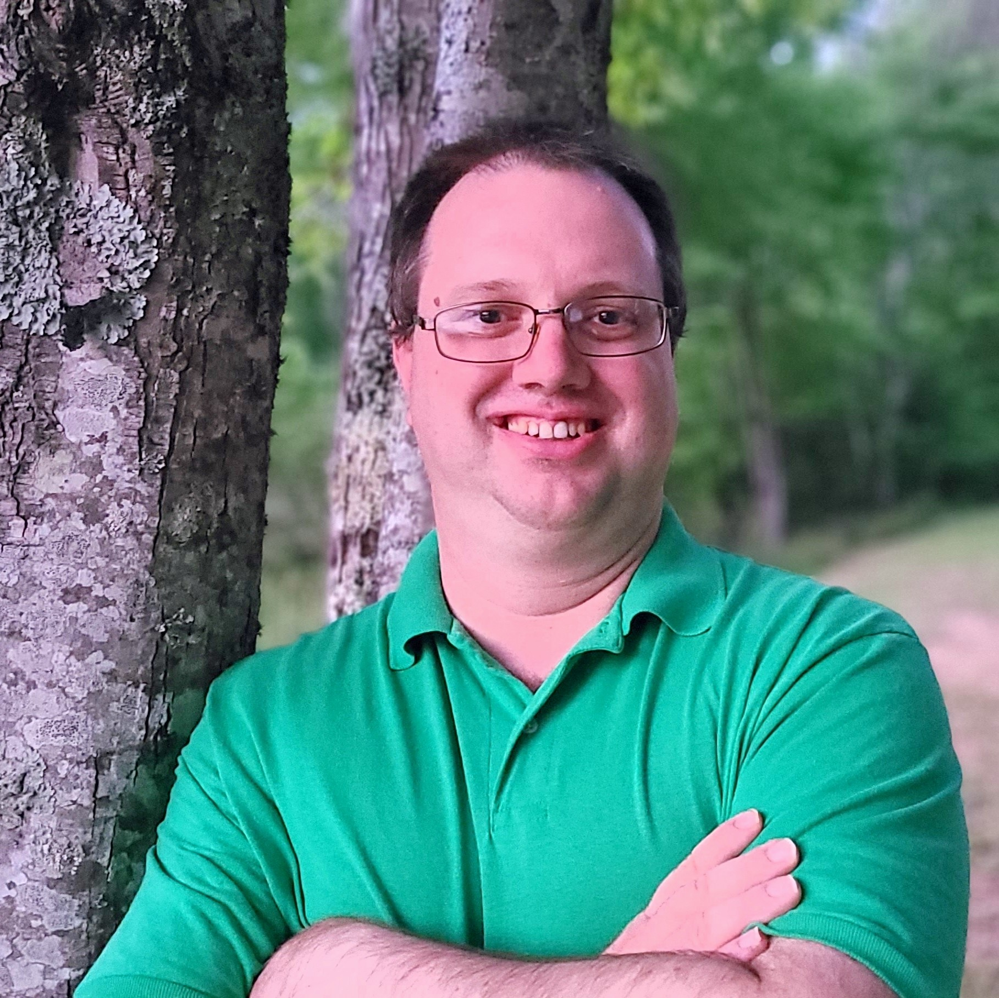

Scott Severance

Paragraph content goes here. Nothing has been written yet, however.
Contact
Experience
- February 2019–July 2020: BLG Logistics (Vance, AL)
Analyst / Customer Support
- Developed and ran daily performance reports in an environment where
reporting is challenging.
- Automated those reports so that my daily time spent on reports decreased
more than 60% while the amount of daily reporting simultaneously more
than doubled.
- Frequently consulted by colleagues, including the IT manager, on a
variety of technical questions.
- Served as the primary point of contact for our customers and resolved any
issues that didn’t require escalation.
- As a result of my customer service work, the number of customer
complaints decreased by more than 50%.
- November 2016–February 2019: iTutorGroup (Headquarters: Shanghai, China)
Consultant
- Taught Internet-based English as a Second Language classes to adult
students who were primarily located in China.
- March 2017–April 2018: ELS Language Center (Addison, TX)
Associate Instructor
- Taught English as a Second Language classes to adult students from a
variety of countries
- Used my extensive multicultural experience to solve problems and keep
students happy
- October 2013–September 2016: Center of English Language (Dallas, TX)
ESL teacher/Curriculum Coordinator
- Taught English as a Second Language classes to adult students from a
variety of countries
- Was involved in a project to convert our record system from paper to
electronic. This involved serving as the exclusive technical contact and
system administrator, setting the system up to meet our needs, liaising
with the vendor to resolve problems, and training staff on the new
system.
- March–September 2013: Mountain Light Institute (Hwasun County, South
Jeolla Province, South Korea)
Volunteer
- Developed a bilingual website for the school with the constraint that, due
to the remote location of the school, all development had to be done
without internet access. Thus, there was no possibility of using any
frameworks or documentation that was not already installed on my
development machine. Despite this constraint, I was able to resolve all
issues that cropped up and successfully launch the website.
- Helped with planning for all aspects of the then unopened school
- 2009–2013: SDA Samyook Language Institute (South Korea)
Coordinator (head foreign teacher), Gwangju Branch
- Technical accomplishments
- Developed a set of scheduling tools to make it easier to manage
complex and sometimes conflicting schedules, requirements, and
schedule requests. This tool saved me considerable time and helped me
to avoid making errors that would otherwise have cost other employees
money.
- Developed documentation for our internal recordkeeping system in a format the
teachers could easily use and understand, and was asked to present it
to all coordinators company-wide. Because of this, the teachers were
able to effectively use a wider range of the available features.
- 2004–2009: Texas Conference of Seventh-day Adventists (headquarters:
Alvarado, TX)
Pastor
- Developed an access-logging system for a youth event in PHP and
CodeIgniter. This system created photo ID badges for all attendees and
staff, who would scan their badges’ barcodes on entry and exit, thus
creating a log of who was present when. In addition, the system was
capable of flagging children who were not permitted to leave without being
picked up by a parent. Many people commented that this system
significantly increased the perceived level of professionalism for the
event.
- School years 1999-2004: Southwestern Adventist University
(Keene, TX)
Student Employee
- Did page layout and technical tasks as necessary (including formatting musical
scores) for music professor who was writing a book
- Provided software and networking support to faculty and students on behalf
of the Office of Information Services
- 1998–2002: Sandia National Laboratories (Albuquerque, NM)
Student Intern
- Set up new Linux network for use in computer simulations
- Developed manual for the simulation software
- Developed and conducted Linux training seminar
- Administered internal departmental website
Education
- 2012: Cambridge CELTA
(Certificate in Teaching English to Speakers of Other Languages)
- 2004: B.A. in Theology from Southwestern Adventist University
in Keene, TX
- Graduated summa cum laude with departmental recognition (GPA: 3.97)
- Finished at the top of my two programming classes, and progressed much
faster than my classmates